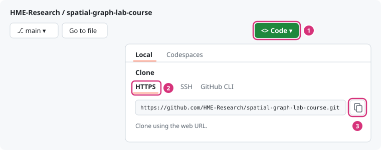
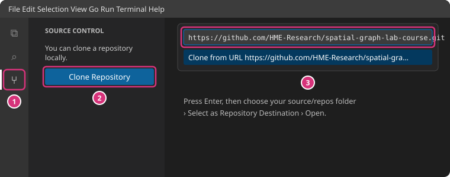

Page 8 of 15 · On your computer
Clone the repository
Put the course folder on your computer and run the app there. Once per computer.
Before this page you need: the tools installed and VS Code signed in to GitHub (see Install the tools).
Orange text like <you> = your own. Grey buttons like Copy = something to click.
01What cloning means
A linked copy on your computer.
What cloning means
A linked copy on your computer.
Cloning makes a copy of the repository on your computer that stays linked to GitHub: it can send your changes there and receive the course's changes from there.
More: Git basics › git clone.
02Copy the repository's address
From the green Code button on GitHub.
Copy the repository's address
From the green Code button on GitHub.
- Open the repositorygithub.com/HME-Research/spatial-graph-lab-course
- Copy its addressThe green Code button › HTTPS › the copy icon beside the address.

It is this address:
https://github.com/HME-Research/spatial-graph-lab-course.git
03Make your repositories folder
source/repos in your home folder.
Make your repositories folder
source/repos in your home folder.
Windows
- File Explorer › This PC › Local Disk (C:) › Users › your user name.
- New › Folder, name it
source. Open it. - New › Folder, name it
repos.
C:\Users\<you>\source\repos
macOS
- Finder › Go › Home.
- File › New Folder, name it
source. Open it. - File › New Folder, name it
repos.
/Users/<you>/source/repos (in short ~/source/repos)
Why not Documents?
OneDrive or iCloud may sync Documents, which breaks a repository with thousands of small files. source/repos is the usual place for code.
Or with a command (optional)
Windows (Command Prompt)
mkdir "%USERPROFILE%\source\repos"
“A subdirectory or file … already exists” is fine.
macOS
mkdir -p ~/source/repos
04Clone it and open it in VS Code
In VS Code, or in the terminal: choose one.
Clone it and open it in VS Code
In VS Code, or in the terminal: choose one.
In VS Code
- Clone RepositoryIn a new VS Code window: the Source Control icon (or Explorer) in the left bar › Clone Repository.
- Paste the addressPaste
https://github.com/HME-Research/spatial-graph-lab-course.gitin the box at the top and press Enter. - Choose your repos folderChoose
source/repos(step 03) › Select as Repository Destination. - Open itWhen VS Code asks, Open. If it asks whether you trust the authors: Yes, I trust the authors.
the Explorer shows
SPATIAL-GRAPH-LAB-COURSEwithlab,toolkitsandtutorial.

In the terminal
- Go to your repos folderIn VS Code, Terminal › New Terminal, then:
Windows (Command Prompt)
cd /d "%USERPROFILE%\source\repos"
the prompt ends in
\source\repos>.macOS
cd ~/source/repos
the prompt ends in
repos %.cdmeans “change directory”: go into that folder. - Clone it
git clone https://github.com/HME-Research/spatial-graph-lab-course.git
“Cloning into 'spatial-graph-lab-course'…”, then the prompt again.
- Open it in VS CodeFile › Open Folder… ›
source/repos›spatial-graph-lab-course› Select Folder (macOS: Open). Trust the authors if asked.
Next time: File › Open Recent.
Problems: “cannot find the path” · “already exists”.
05Open a terminal in it
It starts in the course folder.
Open a terminal in it
It starts in the course folder.
Terminal › New Terminal.
C:\Users\<you>\source\repos\spatial-graph-lab-course><you>@Mac spatial-graph-lab-course %

06Install what the app needs
Once, and again after a course update.
Install what the app needs
Once, and again after a course update.
npm ci
after a few minutes (it downloads a lot; longer on busy Wi-Fi), “added … packages” and the prompt again. Warnings are fine; ERR! is not.
Why npm ci?
It installs exactly the versions the course fixed and never changes a course file, so your copy stays in step with GitHub.
Is this safe on main, before I make my branch?
Yes. It only adds node_modules/, which git ignores (why), and nothing reaches GitHub without a commit and a push.
Problems: ERR! · “running scripts is disabled” · “Could not read package.json”.
07Start the app
It runs on your computer and opens in your browser.
Start the app
It runs on your computer and opens in your browser.
npm run dev
Local: http://localhost:5173/. Open it in your browser (or Ctrl-clickCmd-click it): the app's Welcome screen.
The terminal is busy while the app runs. It takes no commands until you stop the app. For other commands, open a second terminal with the + in the terminal panel.

What is localhost?
“This computer”: the app is served by your own laptop, not by the internet. If it printed another number than 5173, use that one.
Problems: “Port 5173 is in use” · “localhost refused to connect”.
08Stop the app
When you are done.
Stop the app
When you are done.
Click in the terminal where it runs and press Ctrl+C, also on a Mac. On Windows, if it asks “Terminate batch job (Y/N)?”, type Y and press Enter.
the prompt comes back.
the app's Welcome screen opened at localhost. Next: Make your branch and plan your toolkit.